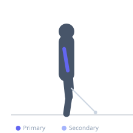
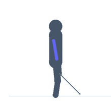

Exercise guide / Overhead Cable Rope Tricep Extension
Overhead Cable Rope Tricep Extension
The overhead cable rope extension uses a rope attachment on a low cable pulley, with the lifter facing away from the machine and extending the forearms overhead. The overhead position puts the tricep long head in a maximally stretched position before each rep. The cable maintains constant tension even at full extension overhead, providing loading through the entire range of motion that free weight overhead extensions cannot match.
Primary muscles
triceps long head
Secondary muscles
triceps lateral head
triceps medial head
Stabilizers
transverse abdominis
Equipment
Cable Machine (Low Pulley)


Starting position
- Attach a rope to a low cable pulley. Face away from the machine, grab the rope behind the head, elbows bent overhead.
Setup
- Set the cable pulley low. Grab the rope with both hands behind the head, elbows pointing upward. Take a step forward to create tension.
Steps
- Step 1: Begin with elbows bent, rope behind the head, feeling the tricep stretch.
- Step 2: Extend the elbows overhead, pressing the rope forward and up.
- Step 3: Hold at full extension for one second.
- Step 4: Return slowly to the starting position, maintaining the stretch.
Coaching cues
- Elbows point up — not out
- Feel the long head stretch
- Full lockout overhead
Breathing
- Exhale on extension, inhale on return.
Range of motion
- Maximum stretch at the bottom to full elbow extension overhead.
Tempo
- 2-1-3-0
Common mistakes
- Flaring the elbows wide
- Leaning excessively forward — maintain an upright torso
- Pulling with the front delts instead of the triceps
Safety
- Avoid if there is shoulder impingement — the overhead position is demanding
Training
- hypertrophy: 10–15 reps
- hypertrophy: 3–4 sets
- Rest: {'hypertrophy': 75}